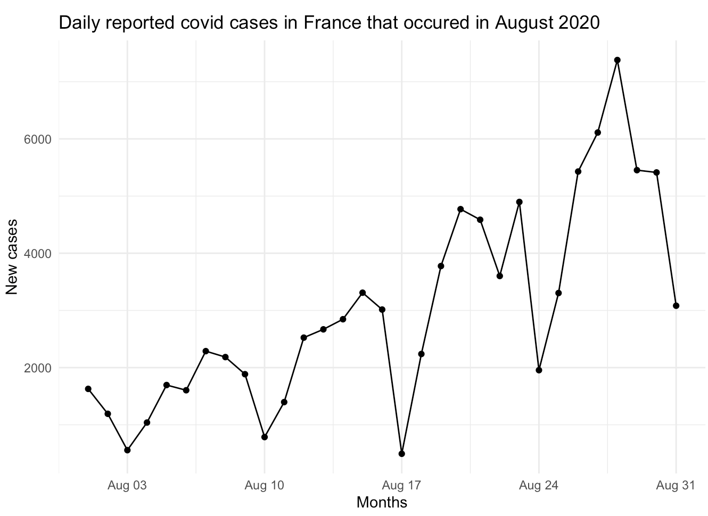
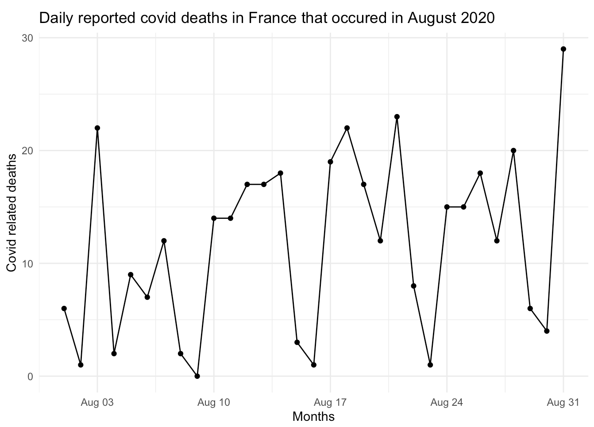

Rmarkdown parameters (9)
Introduction
Parameters make a report in RMarkdown more dynamic, which help reproduce the analysis on different inputs or sets. Parameters can be set up for a number of things, so changing anything will become easy.
In this assignment I will be using data about COVID19 retrieved from ECDC and I will be looking at the daily reported cases and the daily reported deaths.
For this assignment I used three parameters, the default of these need to be set in the YAML header, so if the parameters aren’t specified, these will be rendered.
---
params:
country: "Netherlands"
year: 2021
month: 3
---Data inspection
Starting the analysis with inspecting the dataset, without parameters, to look what we’re working with.
library(tidyverse)
library(dplyr)
library(copopa)
library(ggplot2)
library(utils)# Add file as data using the link from the site
covid <- read.csv("https://opendata.ecdc.europa.eu/covid19/nationalcasedeath_eueea_daily_ei/csv", na.strings = "", fileEncoding = "UTF-8-BOM")
# Check column names and amount of columns
colnames(covid) # There are 11 columns## [1] "dateRep" "day"
## [3] "month" "year"
## [5] "cases" "deaths"
## [7] "countriesAndTerritories" "geoId"
## [9] "countryterritoryCode" "popData2020"
## [11] "continentExp"# Inspect data
covid %>% count(countriesAndTerritories) # 30 countries participate## countriesAndTerritories n
## 1 Austria 971
## 2 Belgium 968
## 3 Bulgaria 962
## 4 Croatia 972
## 5 Cyprus 794
## 6 Czechia 1003
## 7 Denmark 931
## 8 Estonia 973
## 9 Finland 1024
## 10 France 1006
## 11 Germany 992
## 12 Greece 971
## 13 Hungary 968
## 14 Iceland 803
## 15 Ireland 962
## 16 Italy 974
## 17 Latvia 970
## 18 Liechtenstein 948
## 19 Lithuania 997
## 20 Luxembourg 973
## 21 Malta 964
## 22 Netherlands 967
## 23 Norway 980
## 24 Poland 966
## 25 Portugal 934
## 26 Romania 924
## 27 Slovakia 954
## 28 Slovenia 965
## 29 Spain 931
## 30 Sweden 982n_distinct(covid$geoId) # Each country has an unique geoId, so there are no double countries## [1] 30unique(covid$continentExp) # All countries are located in Europe## [1] "Europe"mima(covid$dateRep) # First data was noted on 01/01/2020, last data was noted on 31/12/2021.## $min
## [1] "01/01/2020"
##
## $max
## [1] "31/12/2021"Building a parameterized graph
I will be making two graphs, one about the daily reported cases and one about the daily reported deaths. The parameters are country, year, and months and the default settings are used. The default settings show the data of the Netherlands in all 12 months of the year 2021.
# Filter the necessary columns and change the datatype of dateRep.
covid_cases <- covid %>% filter(countriesAndTerritories == params$country,
year == params$year,
month == params$month)
covid_cases$dateRep <- as.Date(covid_cases$dateRep, "%d/%m/%y")
# Plot the graph
ggplot(covid_cases, aes(x=dateRep, y=cases))+
geom_line()+
geom_point()+
labs(title = "Daily reported covid cases in the Netherlands that occured in March 2021",
x = "Months",
y = "New cases")+
theme_minimal()
# Filter the necessary columns and change the datatype of dateRep.
covid_deaths <- covid %>% filter(countriesAndTerritories == params$country,
year == params$year,
month == params$month)
covid_deaths$dateRep <- as.Date(covid_cases$dateRep, "%d/%m/%y")
# Plot the graph
ggplot(covid_deaths, aes(x=dateRep, y=deaths))+
geom_line()+
geom_point()+
labs(title = "Daily reported covid deaths in the Netherlands that occured in March 2021",
x = "Months",
y = "Covid related deaths")+
theme_minimal()
Alter parameter settings
A parameterized report makes it easy to change settings to have a different view of the data, I added screenshots below to showcase what the graph would look like with a different input.

Figure 3: Parameterized graph containing the COVID cases data.

Figure 4: Parameterized graph containing the COVID deaths data.